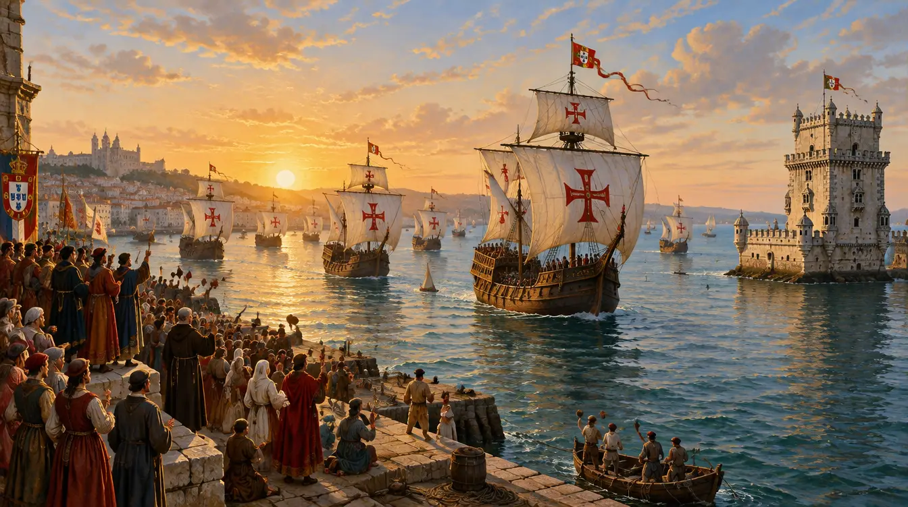

등대글로벌학교 · World History
교과서 Chapter 17 · The Age of Exploration(대항해시대) 24쪽과 수업 슬라이드 33장을 페이지 그대로 담았어. 영어 문장을 누르면 해석이 나오고, 단어를 두 번 누르면 뜻이 떠. 안 누르면 영어만 보여.

세계사는 크게 7개 시대로 나눠 보면 쉬워. 지금 배우는 대항해시대(Ch.17)는 다섯 번째, 근세의 한가운데야.
| 시대 | 기간 | 세계의 큰 흐름 | 대표 사건 · 키워드 | 🇰🇷 같은 시기 한국 |
|---|---|---|---|---|
| ① 선사시대 | ~ BC 3000 | 사냥·채집에서 농사와 정착으로 | 구석기·신석기, 농업혁명, 마을 형성 | 구석기·신석기 |
| ② 고대 문명 | BC 3000 – 500 | 큰 강 주변에서 문자·도시·국가 탄생 | 4대 문명, 함무라비 법전, 피라미드 | 고조선 |
| ③ 고전 고대 | BC 500 – AD 500 | 거대 제국과 철학·종교의 틀 완성 | 그리스 민주정, 로마, 진·한, 실크로드 | 삼국 성립 |
| ④ 중세 | 500 – 1400 | 서유럽은 봉건제·교회, 이슬람·몽골이 교류 주도 | 십자군, 당·송, 몽골 제국, 마르코 폴로, 흑사병 | 통일신라·발해 → 고려 |
| ⑤ 근세 ⭐ | 1400 – 1800 | 유럽이 바다로 세계를 연결 — 최초의 세계화 | 르네상스, 종교개혁, 대항해시대 (Ch.17), 콜럼버스, 중상주의 | 조선 (1443 한글, 1592 임진왜란) |
| ⑥ 근대 | 1750 – 1914 | 혁명과 산업혁명, 그리고 제국주의 | 미국 독립, 프랑스 혁명, 산업혁명, 노예제 폐지 | 조선 후기 → 개항 → 대한제국 |
| ⑦ 현대 | 1914 – 현재 | 두 번의 세계대전, 냉전, 디지털 세계화 | 1·2차 세계대전, 냉전, UN, 인터넷·AI | 일제강점기 → 광복 → 대한민국 |
단원의 핵심 질문: "What are the effects of political and economic expansion?" — 정치·경제적 팽창은 어떤 결과를 가져왔을까?
Exploration and Expansion
탐험과 팽창
교과서 P4–P9
The First Global Economic Systems
최초의 세계 경제 체제
교과서 P10–P15
Colonial Latin America
식민지 라틴아메리카
교과서 P16–P19
| 원인 (Why) | 사건 (What) | 결과 (Effects) |
|---|---|---|
| • 향신료가 비쌈 (아랍 중개상) • 오스만이 육로 차단 • 금·은 욕심 • 기독교 전파 열정 • 명예·모험심 • 새 항해 기술 |
• 포르투갈: 아프리카 돌아 인도 • 스페인: 서쪽으로 아메리카 • 아즈텍·잉카 정복 • 네덜란드·영국·프랑스 경쟁 |
• 👍 세계 무역망·새 작물 → 인구 증가 • 👎 원주민 인구 급감 (전염병) • 👎 대서양 노예무역 • 유럽 부 축적 → 자본주의 • 라틴아메리카 혼혈 사회·가톨릭 문화 • 환경 파괴 시작 |
빨간 점은 시험에 꼭 나오는 연도!
교과서 한 쪽이 카드 하나야. 카드 안에서 원문 / 요약 / 슬라이드를 탭으로 오갈 수 있어. 같은 내용을 다루는 수업 슬라이드가 그 페이지에 함께 묶여 있어.
교과서 페이지에 묶이지 않은 슬라이드야. 수업에서만 다룬 내용이라 시험에 나올 수 있어.
위 페이지들에 나온 단어를 모았어 (0개). "뜻 가리기"를 켜면 뜻이 흐려지고, 칸을 눌러 하나씩 확인할 수 있어.
교과서 Guiding Questions 와 Chapter Assessment 에서 뽑은 질문이야. 먼저 스스로 영어로 답해 본 뒤 아래와 비교해.
문장을 누르기 전에 스스로 뜻을 짐작해 보고 눌러서 맞춰 봐. 이 순서를 지키면 읽기 실력이 같이 늘어.
모든 사건을 "왜? 무엇이? 그래서?" 세 칸으로 정리해. 서양 역사 시험은 Cause and Effect 질문이 대부분이야.
두 번 눌러 뜻을 본 단어는 그 문장째로 소리 내 읽어. 에세이 쓸 때 그대로 쓸 수 있어.
유럽에겐 '발견', 원주민에겐 '침략'. DBQ는 늘 누구의 관점인지를 물어. 양쪽을 다 말할 수 있으면 A+!